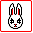

自己扩展Dorothy
游戏里的稍微更复杂一些的东西像是自己定义的游戏物体，游戏角色什么的在Dorothy里是没有的，但只要自己把Dorothy里的oObject或是oUnit升级一下就可以了。像是Bunny里就从oUnit里升级出一堆新的游戏物体像是按钮oButton，带动画效果的数字oNumber，兔子oBunny等等。其实任何游戏物体只要充分发挥你的想象力都可以被升级出来的。比如oNumber其实是4个oUnit的合体物，每个oUnit显示一个数字并对应一个缩放的动画，然后其中第一个数字是这个合体物的主体，整个合体以它作为代表其它3个oUnit由它管理，所以在外界看这个合体物也只是一个普通的oUnit物体，这样这个组合体就可以当作普通的oUnit个体管理了（具体参看oNumber的源码）。
升级出新物体有个要点就是，按自己的需要重写原物体的虚方法。比如前面说的oNumber是由oUnit继承升级来并和另3个oUnit组合成的合体物，如果我再重写原oUnit的ScaleImage的方法，写成这个方法在调用的时候不仅会把自己缩放，还会把另外三个oUnit也缩放，那么用oScaleAnimation动画作用在这个oNumber上的时候，oNumber的每一个数字单位都会出现缩放效果了，而不重写这个方法只会第一个数字被缩放。所以进行一些重写能得到更好的扩展效果。